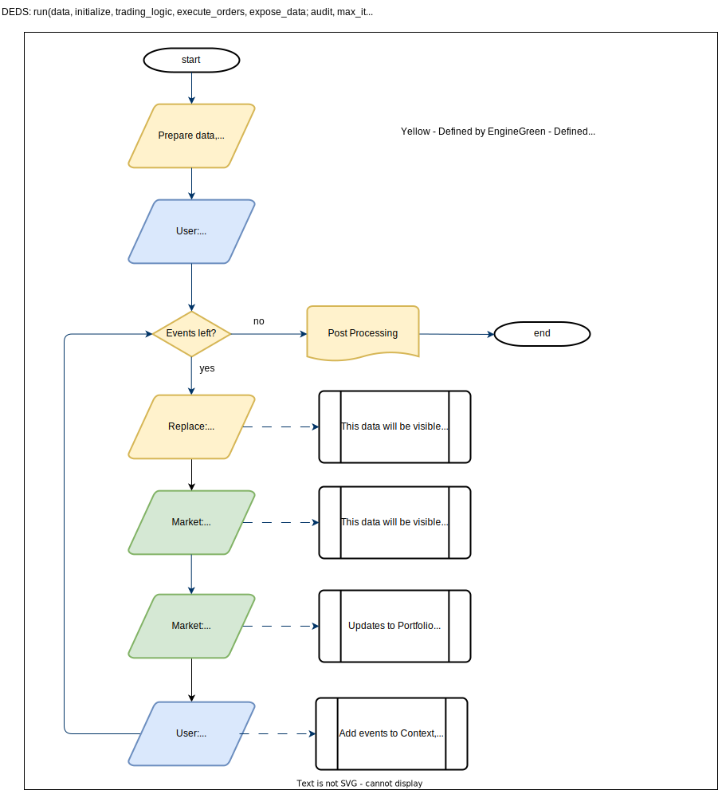

Backtesting and Event Driven Simulation
In this section the main principles guiding the Event Driven Simulation engine used for backtesting is laid out.
Guiding Principles
The driving principles for backtesting are the following:
- Speedeness: The simulation should be fast, extremely fast, so that most of the computational resources can be allocated to calculations that the user wants to do within the simulation.
- Transparency: Calculations should be as accurate, explainable and reproducible. Meaning that a user with some level of proficiency in Excel should be able to get back most of the calculations based solely on the description of the simulation and its calculations obtained in the documentation.
- Realism: From the user perspective the procedure of the simulation should have a strong correlation to what they would expect to see when trading in real life.
Design
The objective of event driven simulation is to do calculations only when necessary and making them as small as possible whilst at the same time having as many simulation points as needed to achieve realism.
- Simulation starts by defining the event_queue which is a list of events, each event carries with them a timestamp and some minimal metadata that determines the workflow of the simulation.
- At the beginning of the routine a special event called initialization_event is defined and added to the queue starting the simulation.
- At the initialization_event the initialize method of the agent is called.
- During this stage the agent should decide how often the market(s) sends him data by either specifying a frequency or scheduling a future releasedataevent event for a particular market(s).
- During this stage a Dictionary context will be created, this variable will be propagated throughout the simulation./
- If desired the agent can also perform actions such as place orders through a broker the orders placed will be placed in a list called order_queue.
- During this stage the broker used and its fee structure needs to also be defined, it can be modified at any point down the line but is assumed that the transactions are done through a broker during the simulation. Special broker to simulate the direct trade by the agent can also be put in place within this framework.
- At the end of the event brokers shall decide how to execute the order by interacting with markets generating a list of orderexecutionqueue.
- Then each market will execute the orders in unobservable events that are communicated to brokers with potentially some delay or noise. Is worth noticing that some orders may have triggering conditions like sell only for a certain amount of currency for example, therefore the triggering of the execution will be left to the market through execution_events. execution_events can also include the payment of dividends.
- At the releasedataevent the handle_data event is called. The data available is the data from a bundle with a timestamp smaller than the time of the event.
This framework allows to have variable timewindows for the agent controlled dynamically by the agent himself.
Engines
DEDS
Deterministic Event Driven Simulation (DEDS) is an engine that executes a series of events where a Market and a User interact with each other. The simulation iterates over a series of events allowing the user to retrieve data from the market and place orders, then the market executes the orders in between consecutive events.
Below one can appreciate the logic behind the AirBorne.Engines.DEDS.run function, which is the run method for the DEDS engine.
